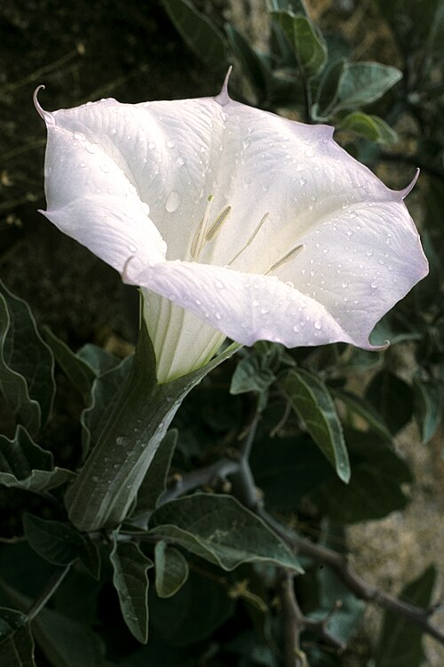
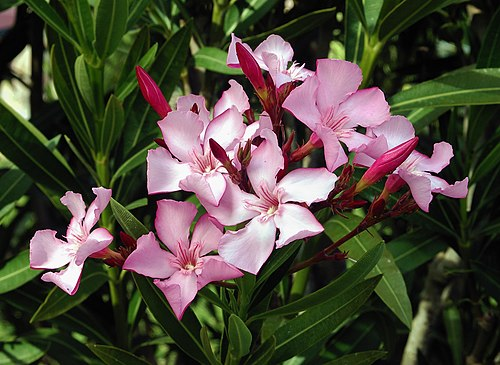

ბელადონა არის ერთ-ერთი ყველაზე ტოქსიკური მცენარე აღმოსავლეთ ნახევარსფეროში.
მცენარის ყველა ნაწილი შეიცავს ტროპანსა და სხვა ალკალოიდებს.
[1][2] ალკალოიდები მაქსიმალურ რაოდენობას მაშინ აღწევს,
როდესაც მცენარე იწყებს ყვავილობას. ფესვები ყველაზე შხამიანია ვეგეტატიური გამრავლების ბოლო პერიოდში.
ფუტკარის მიერ ბელადონას ნექტარი გარდაიქმნება თაფლად, რომელიც ასევე შეიცავს ტროპანსა და სხვა ალკალოიდებს.
ბელადონას სამშობლოდ სამხრეთი და ცენტრალური ევროპა ითვლება, თუმცა გავრცელებულია მისი სამშობლოს ფარგლებს გარეთაც.
1870 წელს შვედეთის სამხრეთში გაშენდა ბელადონას სააფთიაქო ბაღები. ბრიტანეთში ეს მხოლოდ კირქვა ნიადაგზე გვხვდება,
ველებსა და მეჩხერ ტყეებში. გავრცელებულია ჩრდილოეთი ამერიკის ზოგიერთ ნაწილშიც, ჩრდილიან ადგილებში სადაც,
ტენი და კირქვით მდიდარი ნიადაგია.
ლემა

ლემა (ლათ. Datura) — მცენარეთა გვარი ძაღლყურძენასებრთა ოჯახისა. ბალახები, იშვიათად ხეები და ბუჩქებია.
გავრცელებულია უმთავრესად ტროპიკულ და სუბტროპიკულ სარტყელში.
აერთიანებს 20-მდე სახეობას. ყოფილ სსრკ-ში ერთწლოვანი ბალახების 4 სახეობა იზრდება;
მათგან 2 — Datura metel და Datura innoxia კულტივირებულია და გავრცელებული.
საქართველოში 2 სახეობაა: Datura stramonium და Datura metel. ეს უკანასკნელი გზადმოყოლილია აფხაზეთში.
Datura stramonium ერთწლოვანი ბალახოვანი მცენარეა, იზრდება რუდერალურ ადგილებზე, ღობის ძირში, ბოსტანში,
გზისპირებზე. ლემაში შემავალი ნივთიერებები :
ატროპინი
🌱 II. ფლავონოიდები
კვერცეტინი
კემფეროლი
ლუტეოლინი
აპიგენინი
რუტინი
ჰიოსციამინი
სკოპოლამინი
ნორატროპინი
აპოატროპინი
ტროპინი
ფსევდოტროპინი
ბელადონინი
ჰიგრინი
ტროპინონი
დუბოიზინი
მეთილატროპინი
სკოპინოლა
🧪 III. ფენოლური მჟავები
კოფეინის მჟავა
ქლოროგენის მჟავა
ფერულის მჟავა
კუმარის მჟავა
🍃 IV. ტანინები
კატეხინური ტანინები
გალოტანინები
🌺 V. ეთერზეთების კომპონენტები
(უმნიშვნელო რაოდენობით)
ლიმონენი
პინენი
მირცენი
ლინალოლი
🌾 VI. ორგანული მჟავები
ლიმონის მჟავა
ვაშლის მჟავა
ოქსალის მჟავა
ძმარმჟავა
🌿 VII. სხვა ბიოლოგიურად აქტიური ნივთიერებები
გლიკოზიდები
საპონინები
ფისოვანი ნივთიერებები
შაქრები (გლუკოზა, საქაროზა)
პექტინები
ცილები
ამინომჟავები
ქლოროფილი
ფიტოსტეროლები
ფისები
🧬 VIII. მინერალები (მცირე რაოდენობით)
კალიუმი
მაგნიუმი
კალციუმი
რკინა
ფოსფორი
ოლეანდრე

ოლეანდრე (ლათ. Nerium) — მცენარის გვარი ქენდირისებრთა ოჯახისა. მარადმწავანე მაღალი ბუჩქი ან დაბალი ხეა.
მისი 3 სახეობა იზრდება ხმელთაშუაზღვისპირეთსა და სუბტროპიკულ აზიაში. სამივე დეკორატიულია. საკმაოდ ფართოდ არის
გავრცელებული ჩვეულებრივი ოლეანდრე (Nerium oleander). აგრეთვე არის გაშენებული ყირიმის სამხრეთ სანაპიროზე,
კავკასიის შავი ზღვის სანაპიროზე; კარგად ხარობს დასავლეთ საქართველოში.
აღმოსავლეთ ამიერკავკასიასა და შუა აზიის სამხრეთ რაიონებში სიცივისა და სიმშრალისაგან ზიანდება და გადაქცეულია
ოთახის მცენარედ. მთელი მცენარე შხამიანია, შეიცავს გლიკოზიდებს — ოლეანდრინს, კორნერინს და სხვა ნივთიერებებს.
ოლეანდრის ფოთლებისაგან დამზადებული პრეპარატები იხმარება გულ-სისხლძარღვთა დაავადებების დროს.